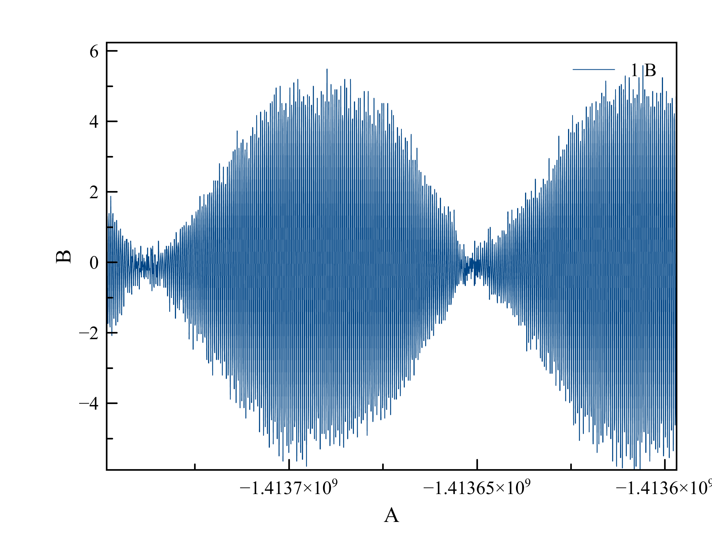

Регистрация ЯМР в земном поле (1922 Гц). Образец - триметилфосфал 130 мл. Поляризация ~100 Гс в течение 5с. Быстрое выключение поляризации. Подача возбуждающего импульса на частоте ядер фосфора (730 Гц) Схема эксперимента:
При изменении длительности возбуждающего импульса наблюдалась следующая картина:

Максимальная амплитуда линии нерасщеплённых протонов наблюдалась при длительности импульса 120 мс

02.07.2019
Открытие не состоялось...
Еще перед уходом из лаборатории в тот день я обратил внимание, что центральный пик появляется и при малой длительности импульса, если просто менять deadtime после импульса. Этим я и занялся сегодня.
Сначала частота импульса была 725Гц и его длительность 2 мс. Deadtime менял от 30 до 400 мс. При этом средняя линия плавно появлялась и исчезала два раза.
Затем, я решил проверить, есть ли эффект при возбуждении на частоте протонов. Эффект повторился... Меня стали терзать сомнения, является ли эта линия следствием изменения взаимодействия ядер фосфора с протонами...
Последний эксперимент подтвердил, что это следствие начальной фазы самого сигнала.
Дело в том, что сигнал представляет собой амплитудную модуляцию.
Следующие рисунки всё объясняют:
